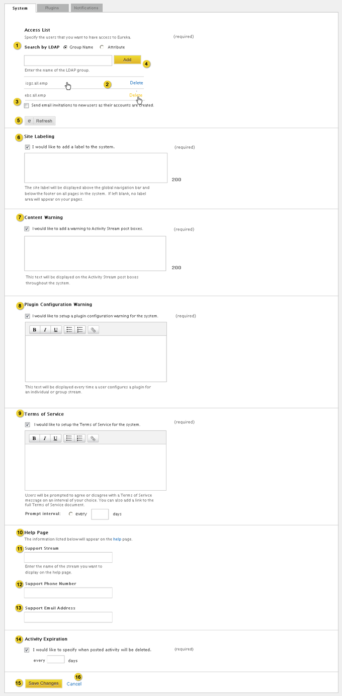
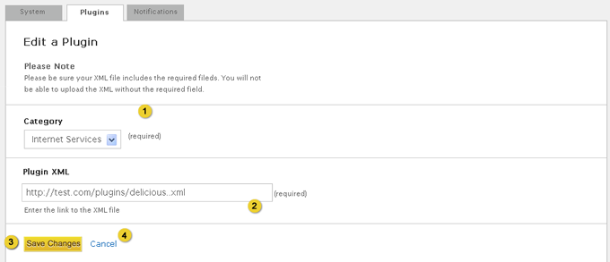

Home > Product Specification > Features > Manage system settings
Manage system settings
Manage and receive notifications
Overview
Root Organization Coordinators can manage system settings. This includes adding new users, setting the content expiration length, and configuring a system label for the header/footers, a terms of service message, and stream plugin warning message.
Conditions of satisfaction
- The root organization coordinator must be able to control system access via a list of ldap groups or attributes.
- The root organization coordinator must have the option to send email invitations to knowledge workers when their account is created.
- The system must periodically synchronize the access list.
- The root organization coordinator must be able to synchronize the access list on-demand.
- The root organization coordinator must have the option to configure a system label displayed in the header and footer.
- The root organization coordinator must have the option to configure a content warning message displayed to a knowledge worker when posting an activity.
- The root organization coordinator must have the option to configure a stream plugin warning message displayed to a knowledge worker when configuring a stream plugin for a stream.
- The root organization coordinator must have the option to configure a terms of service message displayed at a configurable interval that must be confirmed by the knowledge worker.
- The root organization coordinator must be able to set the content expiration length between 1 and 360 days.
- The system must periodically remove activities older than the content expiration length with the exception of those saved by a knowledge worker.
- The root organization coordinator must be able to configure the support group.
- The root organization coordinator must be able to configure the help desk contact information.
- The knowledge worker must be able to lookup contact information for product support.
- The root organization coordinator must be able to publish and categorize a stream plugin referenced by a url.
- The system must verify that the stream plugin adheres to the Google gadget specification and eureka stream plugin feature.
- The root organization coordinator must be able to modify the category and url for a published stream plugin.
- The root organization coordinator must be able to remove a published stream plugin.
User experience
Systems Settings

- Knowledge workers can select “Group Name” to enter an LDAP group name. The knowledge worker can select “Attribute” the message under the input box changes to: “Specify an LDAP attribute (in the format: attribute=value)”.
- Hovering over the group or attribute displays a Delete link allowing the knowledge worker to delete the item. When the delete icon is clicked, a pop-up window is displayed asking the user if they are sure that they want to remove the item. If they click yes the item is removed and the other items move up.
- The knowledge worker has the option to send welcome emails to users when their accounts are created.
- When a user enters a group name or attribute and clicks add a processing animation appear while the system validates the group or attribute. If the group or attribute is not found an error message is shown at the top of the page.
- Feedback displays at the top of the page with a close option: “Access List Refresh is now processing”. Refer to the Action Feedback UI design pattern for additional details. Access list refreshes and new users in the group or attribute are added to the database.
- Site Labeling is disabled by default. When enabled the text box is required and supports up to 250 alpha numeric characters.
- Content Warning is disabled by default. When enabled the text box is required and supports up to 250 alpha numeric characters.
- Plugin Configuration Warning is disabled by default. When enabled the text box is required and the Plugin Configuration Warning rich text editor supports an infinite amount of characters.
- Terms of Service is disabled by default. When enabled the text box and prompt interval are required. Terms of Service rich text editor supports an infinite amount of characters. Days field supports up to 5 numeric characters.
- Links to the help page.
- The root organization coordinator can enter the name of the group stream they want to specify by clicking in the input box. As they type matches to individual or group streams are displayed in a drop down menu. Entering or selecting a valid stream name removes the input box and displays the name of the stream. The root organization coordinator can remove the stream by clicking the “x” button next to the stream name which will display an empty input box. If the organization coordinator enters an invalid stream name and tries to save the changes to the page a warning message will be displayed saying “The stream you entered could not be found”. Field supports up to 50 characters (same length as group name in View and manage a group profile
- Support Phone Number field supports up to 50 characters.
- The root organization coordinator will be warned if they enter an email address that is not properly formatted. Support Email Address field supports up to 50 characters.
- Activity Expiration is disabled by default. When enabled the text box is required, supports a number between 1 and 360.
- Saves the edits made to the form and returns the knowledge worker to the start page. Feedback displays at the top of the page with a close option: “Settings saved”. Refer to the Action Feedback UI design pattern for additional details.
- Discards the changes made to the form and returns the knowledge worker to the start page.
Plugin System Settings
View existing Plugins

- Allows root organization coordinator to filter by Category.
- Hovering over the plugin icon or text displays the Edit and Delete links. Clicking edit displays the plugin configuration form titled Submit a Plugin.
- Hovering over the plugin icon or text displays the Edit and Delete links. Clicking the delete icon displays a pop-up window asking the knowledge worker: “Are you sure you want to delete this plugin” if the knowledge worker clicks “yes” the plugin is deleted and a warning message is displayed: “Stream plugin [insert name] has been deleted”. Refer to the Action Feedback UI design pattern for implementation specifics.
- Allows root organization coordinator to Add a new plugin
Submit a Plugin

- Select a Category.
- Enter Plugin XML.
- Submits new plugin, returns user to the Plugin page and feedback displays at top of page with a close option: “Stream Plugin has been successfully added” Refer to the Action Feedback UI design pattern for additional details.
- Cancels plugin submission and returns user to the Plugin page.
Edit Plugin

- Modify the Category.
- Update Plugin XML.
- Saves plugin, returns user to the Plugin page and feedback displays at top of page with a close option: “Stream Plugin has been successfully saved” Refer to the Action Feedback UI design pattern for additional details.
- Cancels plugin updates and returns user to the Plugin page.
Help Page

- Avatar and link go to the support stream
- Clicking the email link opens the knowledge worker’s new email from the knowledge worker’s local email client.
- Link opens a new window to http://eurekastreams.org
Test plans
Knowledge Worker
- Action: Attempt to Manage System Settings
- Verify that the knowledge worker is unable to edit system settings
- Action: Lookup contact information for product support
- Verify that the product support contact information can be viewed
Group Coordinator
- Action: Execute same tests as Knowledge Worker
- Verify tests executed successfully
Organization Coordinator
- Action: Execute same tests as Knowledge Worker
- Verify tests executed successfully
Root Organization Coordinator
- Action: Control system access via a list of ldap groups or attributes
- Verify a root organization coordinator can add a Group Name
- Verify a root organization coordinator can delete a Group Name
- Verify an error message is displayed if a blank or invalid Group Name is entered
- Verify a root organization coordinator can add an Attribute
- Verify a root organization coordinator can delete an Attribute
- Verify an error message is displayed if a blank or invalid Attribute is entered
- Action: Confirm the option to send email invitations to knowledge workers when their account is created
- Verify the ability to send email invitation to knowledge workers when their account is create
- Verify the ability to not send email invitations to knowledge workers when their account is create
- Action: Confirm the system periodically synchronize the access list
- Verify the access list is synchronized
- Action: Synchronize the access list on-demand
- Verify the access list is synchronized
- Action: Confirm the option to configure a system label displayed in the header and footer
- Verify the ability to enable or disable the system label displayed in the header and footer
- Verify when the option is enabled,
- a text input box displays
- text is required
- error handling is present if text is empty and the user attempts to submit
- Verify when the option is enabled and text is submitted, the text is displayed in the header and footer
- Verify when the option is disabled, the text box is hidden
- Verify when the option is disabled, there is no text displayed in the header and footer when submitted.
- Action: Confirm the option to configure a content warning message displayed to a knowledge worker when posting an activity
- Verify the ability to enable or disable displaying a content warning message when posting activity
- Verify when the content warning message is enabled,
- a text input box displays
- text is required
- error handling is present if text is empty and the user attempts to submit
- Verify when the option is enabled and the text is submitted, the text is displayed below the activity posting text box and commenting text box
- Verify when the option is disabled, the text box is hidden
- Verify when the option is disabled, there is no text displayed below the activity posting text box
- Verify when the option is disabled, there is no text displayed below the commenting text box
- Action: Confirm the option to configure a plugin warning message displayed to a knowledge worker when adding a plugin
- Verify the ability to enable or disable the plugin warning
- Verify that when the plugin warning is enabled
- a text input box displays
- text is required
- error handling is present if text is empty and the user attempts to submit
- Verify when the option is enabled and the text is submitted, the text is displayed in the Terms of Use for each plugin
- Verify when the option is disabled, the text box is hidden
- Verify when the option is disabled, there is no text displayed in the Terms of Use for each plugin
- Action: Confirm the option to configure a terms of service message displayed at a configurable interval that must be confirmed by the knowledge worker
- Verify the ability to enable or disable the terms of service
- Verify that when the terms of service is enabled
- a text input box displays
- There is an option to choose to display the terms of service at a specific interval
- Verify when the option is enabled and the text is submitted, the text is displayed when launching the site at the intervals selected
- Verify when the option is disabled, the text box is hidden
- Verify when the option is disabled, there is no text displayed in the terms of service when launching the site at the intervals selected
- Action: Set the content expiration length between 1 and 360 days
- Verify the ability to enable or disable the activity expiration
- Verify that when the activity expiration is enabled
- a text input box displays and represents the number of days
- # is required
- error handling is present if text is empty or has a non-numeric value and the user attempts to submit
- Value must be between 1 and 360
- Verify when the option is enabled and the number is saved
- Verify when the option is disabled, the text box is hidden
- Verify when the option is disabled, data is not deleted
- Action: Periodically remove activities older than the content expiration length with the exception of those saved as favorite
- Verify that activities are saved and have an original activity post date older than the content expiration are not removed
- Verify that activities that are not saved and have an original activity post date older than the content expiration are removed
- Action: Configure the support group
- Verify that the support group displays
- Action: Configure the help desk contact information
- Verify that the help desk contact information displays
- Action: Publish and categorize a stream plug in referenced by a url
- Verify there is a link directing the user to a form to upload a stream plug in
- Verify error handling is present when required fields are not populated
- Verify a category can be selected and associated with the stream plug in
- Action: Confirm stream plugins adheres to the Google gadget specification and eureka stream plugin feature
- Verify a stream plug in that is uploaded must adhere to the Eureka stream plugin feature and the Google gadget specification
- Verify that if a stream plugin does not adhere, there is error handling
- Verify there is a link which will direct the user to the developers guide
- Action: Modify the category and url for a published stream plugin
- Verify the category can be changed for a stream plugin that has been uploaded
- Verify the URL can be changed for a published stream plugin that has been uploaded
- Verify there is error handling in the edit mode
- Action: Remove a published stream plugin
- Verify a plugin can be removed
- Verify there is removal confirmation
- Verify the plugin is removed, but is not stripped from user or group streams with the stream plug in configured
| PAGE CONTENTS
Version 0.9
Documentation is also available for all of the following versions:
1.0 | 1.1 | 1.5 | 2.0
|